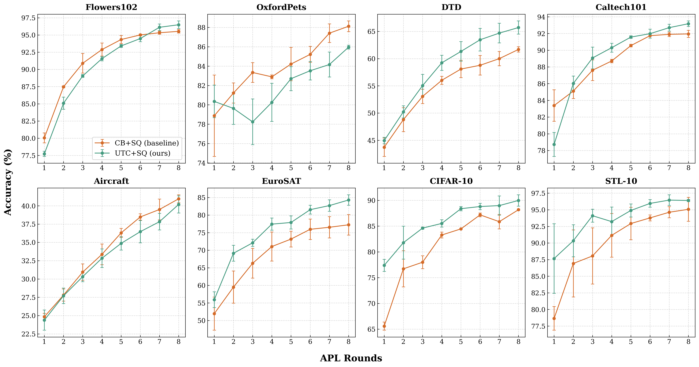

Unsupervised Transfer Clustering for Mitigating Cold Start in Active Prompt Learning
Abstract
Active Prompt Learning has emerged as an effective paradigm for adapting pre-trained vision-language models with minimal human annotations. However, selecting initial samples under the "cold start" regime remains challenging due to the lack of labeled target data. In this work, we propose Unsupervised Transfer Clustering (UTC) to mitigate the cold start problem by transferring cluster structures from source representations to guide active sample selection. Extensive experiments demonstrate that UTC significantly boosts initial prompt optimization efficiency and overall downstream performance.
Method Overview

Overview of the UTC framework: The pipeline leverages unsupervised transfer clustering to discover informative feature partitions without supervision. By mitigating cold start uncertainty, UTC guides the active learning loop to query the most representative visual samples for prompt tuning.
Experiments & Results
Active Learning Curves & Cold-Start Analysis
Comparison of active prompt learning accuracy across initial annotation rounds against baseline selection strategies.

Benchmark Comparison
Quantitative evaluation across multiple standard vision benchmarks evaluating prompt adaptation accuracy.

BibTeX
@inproceedings{portella2026utc,
title = {Unsupervised Transfer Clustering for Mitigating Cold Start in Active Prompt Learning},
author = {Portella, André and Santos, Samuel Felipe dos and Almeida, Jurandy},
booktitle = {Conference on Graphics, Patterns and Images (SIBGRAPI)},
pages = {1-6},
year = {2026}
}